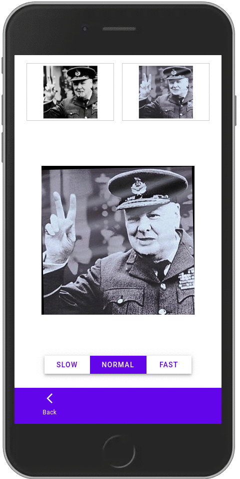

Image Compare |
VGG Image Search Engine |
||
|---|---|---|---|
|  | Image Compare is a lightweight, standalone and offline application to visually compare a pair of images and highlight their differences. This application can be used in desktop computers and mobile phones without requiring installation as it runs in a web browser. |
Standalone application able to make a large collection of images searchable by using image regions as query. |